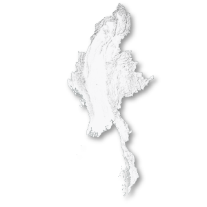

%201.png)


Myanmar possesses some of the world’s most valuable deposits of jade, tin, gold and heavy rare earth elements. These minerals underpin industries ranging from electronics and artificial intelligence to clean energy, defence manufacturing and luxury goods. Yet many are extracted in conflict areas in one of the world’s longest-running civil wars, ongoing since independence in 1948, and contribute to shaping the battlefronts in some of the country’s most remote areas.
Myanmar’s conflicts are not driven primarily by natural resources – they are political struggles over power, autonomy and identity. But control of valuable mineral deposits has become an important source of revenue, leverage and strategic influence for both the military and its opponents. Decisions taken by armed groups in Myanmar’s borderlands can reverberate through global commodity markets, while international demand helps sustain local war economies. Using satellite imagery, field research and interviews, this series examines how four critical resources connect Myanmar’s expanded civil war to the global economy.